Welcome to the AppSheet App Jam module 2! This is a 2-hour hands-on workshop that will guide you step by step through building an app in the AppSheet platform.
What is AppSheet?
AppSheet is a leading no-code platorm for rapid Application Development that delivers tools to create, customize, and deploy mobile apps at a fraction of the cost and time of traditional development methods.
There is a large, growing deficit of developers in the world. As a result, IT organizations are experiencing a huge backlog of software requests, slow development cycles, and security challenges due to shadow IT projects. AppSheet helps reduce this backlog by offering intuitive development, completely governed by central IT.
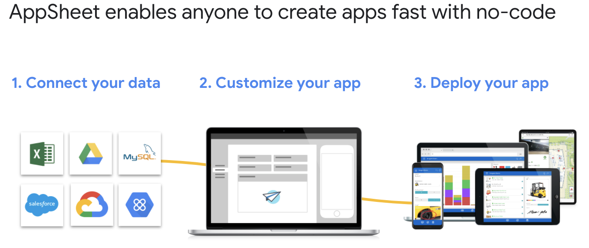

What you'll build
During the course, you will gain experience with many fundamental skills used in the AppSheet platform. At the end of the course, you will have built an intermediate-level app and gained the AppSheet knowledge needed to create a wide range of useful apps to enhance your business.
What you'll learn
- How to create and add a web app manifest
- How to provide a simple offline experience
- How to provide a full offline experience
- How to make your app installable
What you'll need
- A recent version of Chrome (74 or later)
- Users must first create a free AppSheet account here
This lab will walk you through the basics of connecting a data source to your appsheet environment, and using this data to generate an application.
Prerequisites
Users must first create a free AppSheet account here
Steps
Open the following Google Sheet and copy to your Google environment - Select File > Make a copy. We will use this Google sheet as the data source on which we will construct our first application.
Navigate to the My Apps section of the AppSheet website and select the "Make a new app" icon

We are given three options to start the app building process.
- "Start with a sample app" allows you to copy a pre built application to your environment. Pre built sample applications are available in a wide range of categories.
- "Start with an idea" allows you to define the basics of your application using natural language processing
- "Start With Your Own Data" allows users to build applications on top of data sources connected to their AppSheet accounts
Select "Start with your own data"

Give the app a name and select a category.
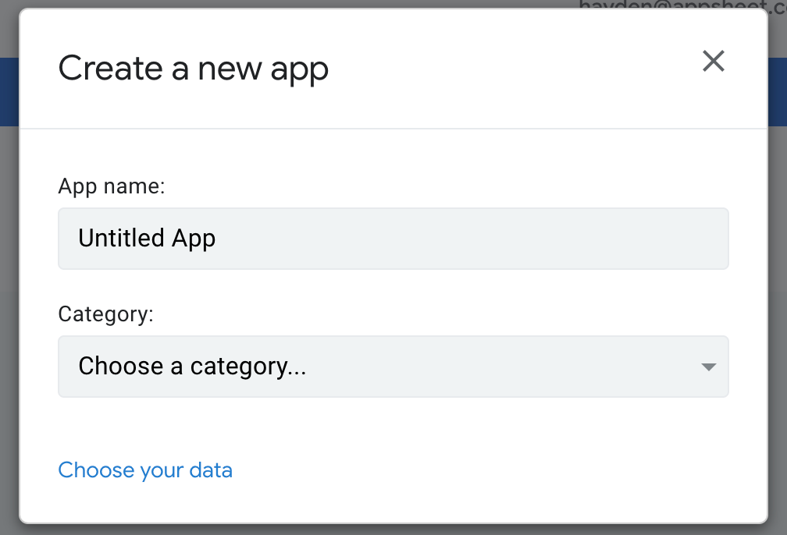
Locate and select the Google Sheet you copied to your drive earlier in the lab
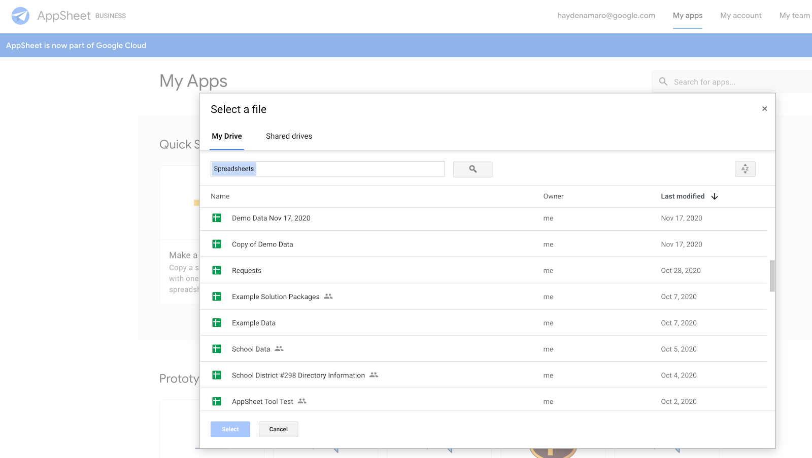
AppSheet will now stand up a basic application based on the connected data source. We are now taken to the AppSheet editor where we can begin modifying our application.
The AppSheet editor has three primary sections
- The quick nav menu, which takes you to the various areas of the editor.
- The main editor body - this is where you can modify your app's definition.
- The emulator - which shows you a live interactive preview of your application as you build

The main first table in our Google Sheet titled "Requests" has been ingested automatically, but we will need to add the "Users" table manually. Navigate to the data section of the editor and click to add the table titled "Users"
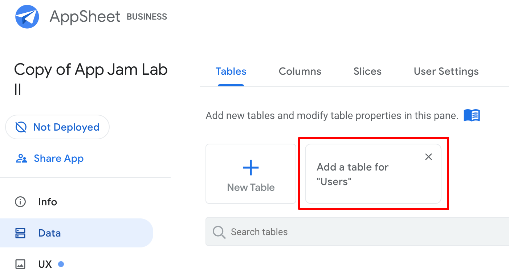
Open the "Requests" table, and select "View Columns". Here you see a list of the columns included in our underlying data source, and can make changes to how that data is ingested.
Selecting a data type for each column helps AppSheet contextualize the data and provide relevant actions inside of your application. By modifying the settings for each column we can put guard rails on data entry, fill out values automatically, and change input methods inside of our app.
Change the data type for the column "Status" to Enum. This data type allows us to restrict users to a few select options when inputting data in this column.

Click the pencil icon to edit the properties of the status column. Add three values: "Review Required", "Approved", "Rejected"
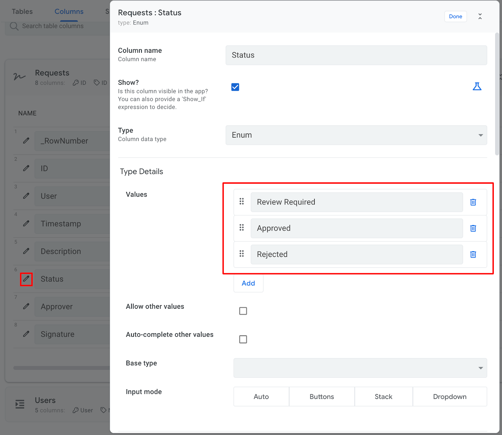
These values will appear as select options when the user interacts with forms inside of the application.

In a typical app building scenario, you would repeat this process of data type categorization for each column in the underlying data source.
The final concept we will explore in this lab is the Ref or Reference.
A reference is a link between a column of one table and the key of another table - indicating that the two connected pieces of data are related to one another.
If we look at our "Requests" and "Users" table - we notice that the information contained in the User column of the Requests table maps to the User column found in the Users table.
Requests Table | ||
ID | User | ... |
86569920-4649-43c6-aebe-2a9420ed0287 | generic@fake.com | ... |
5162d20f-1116-456d-993c-b99516c1e0b4 | hayden@appsheet.com | ... |
02711cd3-9639-4c60-b7e4-b34a336f52dc | generic@user.com | ... |
Users Table | ||
User | Name | ... |
generic@fake.com | John Doe | ... |
hayden@appsheet.com | Hayden Amaro | ... |
generic@user.com | Jane Doe | ... |
We can use References to relate these two tables and draw line of sight between related data points across tables.
Open the data section and navigate to the "Requests" table. Click the "View Columns" button.
You will notice that the platform has already identified this association between the Requests and Users table and made the ‘User' column in the "Requests" table a Ref.
Save your application by clicking the SAVE button in the upper right corner of the editor.
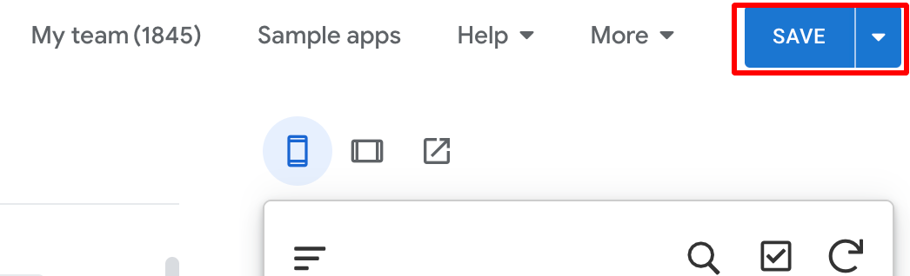
Thus concludes App Jam lab 1!
This lab will walk you through the basics of building and modifying views in the AppSheet Editor
Prerequisites
Users must have completed Lab 1
Steps
We'll begin this lab by navigating to the UX tab in the quick nav menu. This pulls up a section of the editor where users are able to create and manage the views which will appear in our application.
Notice that the views listed in the Primary Views section correspond to the navigation buttons inside the app preview in the emulator.

Views come in various types. Click on the Requests button in the Emulator and in the Main Editor Body. If we select a new view type for the Requests view, that change is reflected instantly in the Emulator. Change the view to type Card.
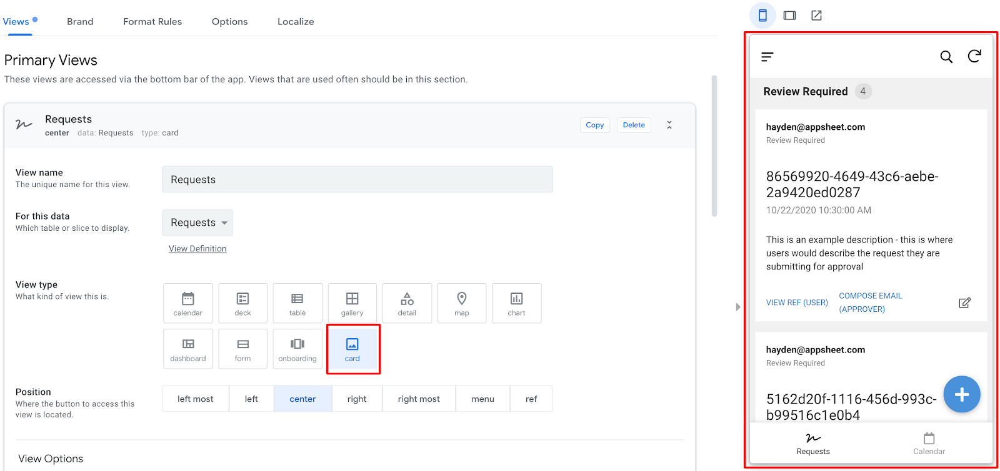
We can change how this view looks and operates by modifying it's settings. Let's begin by grouping the entries by Status and sorting the entries by Timestamp.

To create a new view, click the New View icon at the top of the views section.
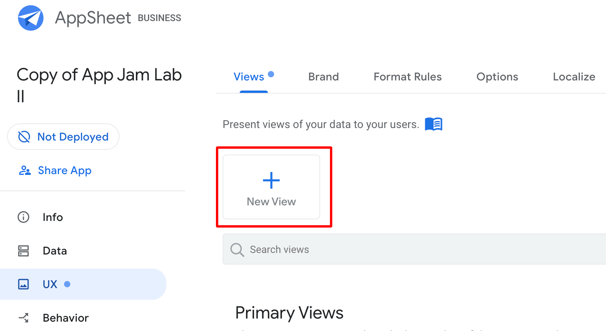
Give the new view the title New Form, select the Requests table as the data source, and select the view type "Form".

We can now interact with our new view in the Emulator. Select the form from the navigation bar and fill out the form with example data, then click save.

Navigate back to the underlying data source for the application (The Google Sheet you copied) by navigating to the Data tab and selecting View Source

Notice that there is now a new row containing the data you input via the form.
AppSheet gives us the ability to modify the overall look and feel of our application from a centralized location. Navigate to the UX tab and select Brand.
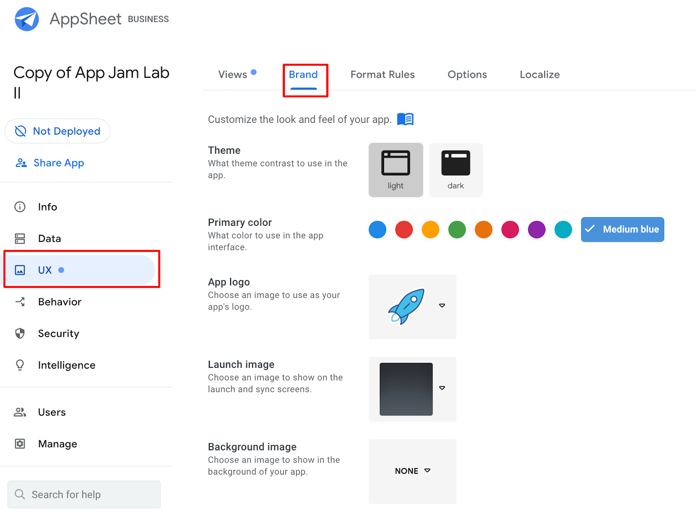
Change the App Logo, and Background image, and Primary color of your application. Notice how these changes are reflected in the App Emulator on the right side of the screen.

More UX settings can be manipulated under the Options tab. Change font from Roboto to Rubik.

Format rules can be applied dynamically to data surfaced through your application - this can be used to improve the readability of your application, or to telegraph information like Status. Navigate to Format Rules and create a new rule.

Format Rules operate by monitoring a particular data point in your app's data - if that data point meets a filter condition you define, then the Format Rule will be applied in the app.
We'll build a Format Rule which highlights requests that have been approved by displaying a green checkbox. Give your format rule a name - ours is titled "Highlight Approved Requests". Select the Requests table in the "For This Data" section.

Now we need to tell AppSheet when to apply this rule by adding a filter condition. Click inside the "If this condition is true" box to open the expression editor.

Input the following expression;
[Status] = "Approved"

[Status] tells Appsheet to look at the value of the status column
= "Approved" tells AppSheet to check if the value in that column is "Approved"
If this expression resolves to TRUE, our format rule will be applied. We need to tell AppSheet which piece of data we'd like to apply this format rule to. From the "Format These Columns" section, select Status.

Finally we must designate a formatting change to be applied when the format rule executes. In this case we will select the Check icon and the Highlight Color green.
Now click the "SAVE" button in the upper right corner of the screen - this will ensure your Format Rule is applied.
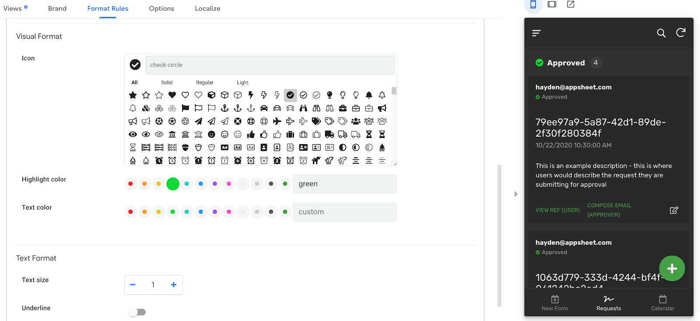
Notice in the emulator that entries matching this filter condition have had the format rule applied.
This lab will walk you through the basics of creation and modification of app behaviors
Prerequisites
Users must have completed Lab 2
Steps
In the prior lab we created a basic form and applied some format rules to this view. In this lab we will layer on additional modifications to improve the behavior and function of this form.
To do this we will leverage AppSheet's automation capabilities to have the form autofill some values in order to streamline the data entry process.
Let's begin by navigating to the Data tab and setting up some expressions to autofill values on the user's behalf;

Scrolling to the right reveals that there are many areas where we can manipulate how data is handled inside of our apps. Among them;
- Setting an initial auto populated value for a field (INITIAL VALUE)
- Setting a calculated value for a field (FORMULA)
- Determining whether a field is displayed or not (SHOW?)
- Determining whether a field is editable to our users (EDITABLE?)
Let's make a few changes to these properties and see how it affects the user experience inside of a form.
- Changes to the ID column
- Set the initial value to UNIQUEID()
- Uncheck the EDITABLE? Box

These changes will cause AppSheet to generate a new Unique Identifier in the ID column whenever a new entry is created - toggling the editable field ensures that users cannot change this ID from within the app.
- Changes to the Timestamp column
- Set the initial value for timestamp to NOW()
This expression will cause AppSheet to automatically insert a timestamp in this field on behalf of the user.
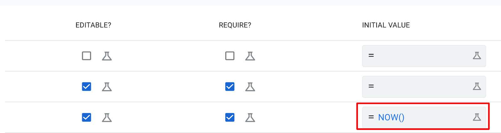
- Changes to the User column
- Set the initial value to USEREMAIL ()
- Uncheck the EDITABLE? Box
- Uncheck the SHOW? Box

These changes will capture the logged in users email and automatically associate it with any records generated. We have deselected the Editable box such that the user cannot modify this automatically captured information. We have also unchecked the SHOW? Box as this information is not relevant to the user.
Now navigate back to the form in the emulator, and see how the user experience is changed. The fields we modified in the data section now autofill with no need for user input.

We can also apply automation to other areas of our application. We will now walk through the process of setting up a basic notification workflow!
Workflows monitor a data set for changes of a certain type, and when a change of that type occurs, AppSheet performs an action automatically. The workflow we will define here is intended to notify users via email when new Requests are added via the form we built earlier.
Navigate to the Behaviors section and the workflows tab. Select Create New Workflow, name it New Request Notification.
Set the Target Data to Requests
Set the Update event to ADDS_ONLY
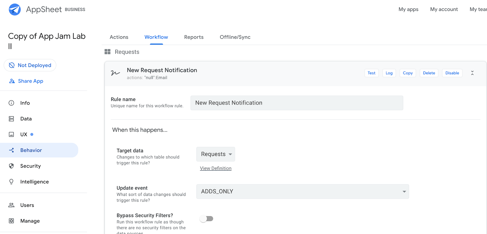
Next we must define the action we want the workflow to perform when a new entry is added.
Select Email from the action list, and in the To field input the following expression;
[User]
This expression will pull the email of the user who submitted the request, and route the email generated to that user.
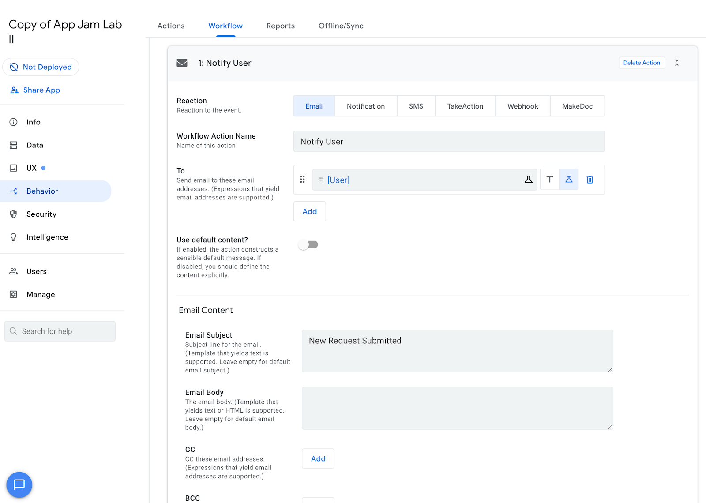
Input the text New Request Submitted into the Email Subject field. In this case, we will leave the Email Body field empty - this will cause AppSheet to automatically generate the email body summarizing the data related to the request.
Let's try it out! Navigate to the form in the emulator, and submit a new request.

Now check your email! Within a few minutes you should receive a notification from the app.
This lab will walk you through the basics of controlling user access to data, and user management.
Prerequisites
Users must have completed Lab 3
Steps
The first topic covered in this lab will be Security Filters. When you use Security Filters, you normally set the Require user authentication option on the Security > Require Sign-In pane. This ensures that we are able to identify each authenticated app user.
Once a user signs in, AppSheet knows the user's email address. You can then use the user's email address to filter the data shown to that user. In addition to filtering data, you can also limit users to particular tables, views, and actions
Let's begin by Navigating to the Security section of the editor and creating our first Security Filter. Security Filters operate on a table by table basis, and restrict access to data based on the identity of the logged in user. Click on the icon for Requests to begin designing our Security Filter.
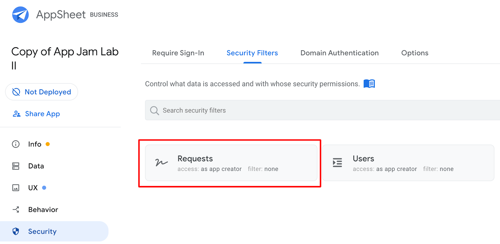
A security filter checks that a certain conditional logic expression is met before showing a user any row in a table. We'll create an expression that checks if the row in question was created by the logged in user before displaying that entry.
In the Security Filter field, input the following expression;
USEREMAIL() = [User]

USEREMAIL() returns the email address of the authenticated app user
= [User] compares that value to the value in the User column
If this condition is met for any row, that row will be visible to the logged in user. The effect of this Security Filter is that Users can only see rows they have created / are associated with. This data restriction will carry over to all views which are based on this table.
Filter Condition: (USEREMAIL() = [Email]). This filter will only allow users to see their own submissions. Navigate to the Users tab, and add yourself as an approved user. You will receive an email notification.